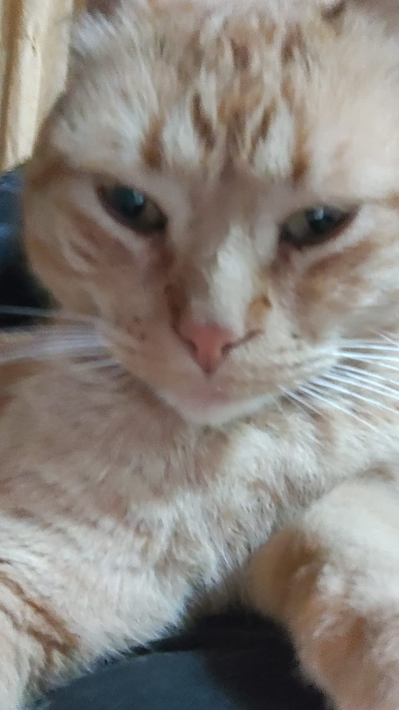
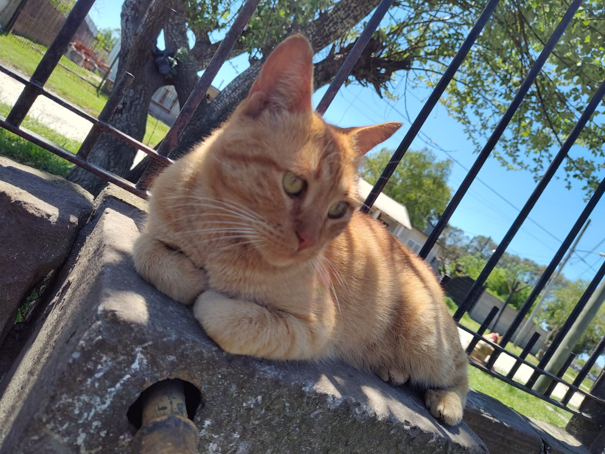
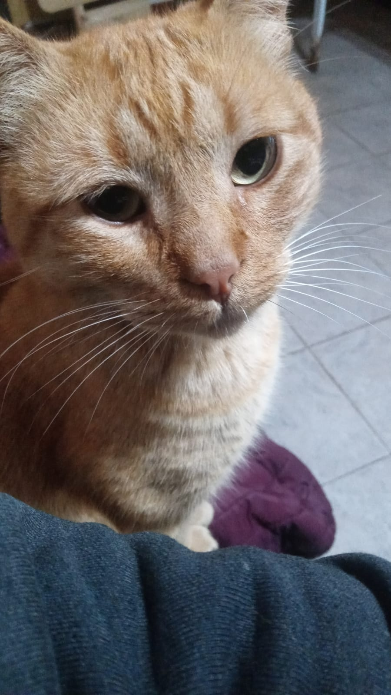

Una caricia al alma
La compañía de un gato es algo verdaderamente especial y, en muchos sentidos, única. Aunque conocidos por su independencia, los gatos pueden convertirse en compañeros leales y afectuosos que enriquecen nuestras vidas de maneras inigualables. En el tranquilo ronroneo de un gato, encontramos una sinfonía de consuelo y relajación. Este suave murmullo, que resuena como un eco tranquilizador, es como un recordatorio constante de la presencia reconfortante de nuestro pequeño compañero peludo. Los gatos parecen tener una habilidad innata para sintonizar con nuestras emociones, brindando consuelo en momentos de tristeza y celebrando junto a nosotros en los momentos de alegría.
La compañía de un gato no es intrusiva ni exigente, sino más bien, un regalo tranquilo y constante. Los felinos son maestros de la sutileza, ofreciendo su afecto de maneras que a menudo son subestimadas. Desde el simple roce de sus cabezas contra nuestras manos hasta el suave ronroneo mientras se acurrucan en nuestro regazo, los gatos son expertos en transmitir amor de una manera que es sutil pero profundamente significativa.
En resumen, la compañía de un gato es una bendición en nuestra vida cotidiana. Su capacidad para brindar consuelo, su lealtad silenciosa y su presencia tranquilizadora los convierten en compañeros extraordinarios. Los gatos no solo comparten nuestro espacio físico, sino que también ocupan un lugar especial en nuestros corazones, dejando una huella de afecto y conexión que perdura mucho más allá de su suave ronroneo y sus ojos curiosos.
Están siempre listos para acompañarnos, ya sea en una tarde tranquila leyendo un libro o en una noche lluviosa cuando su presencia es el consuelo perfecto.